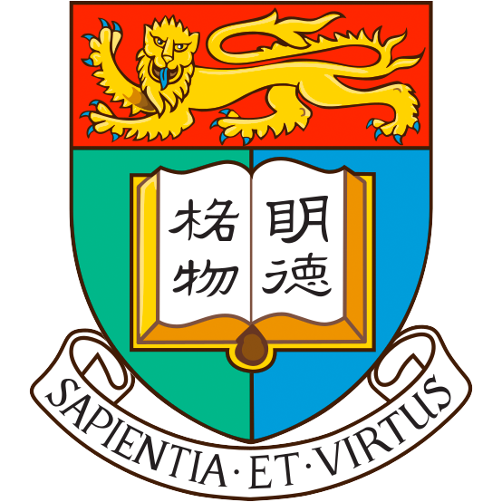
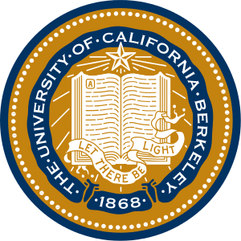
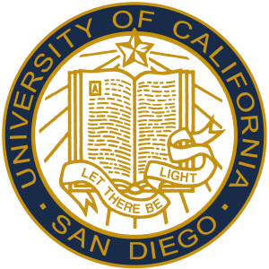
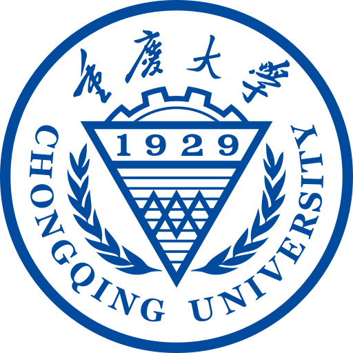
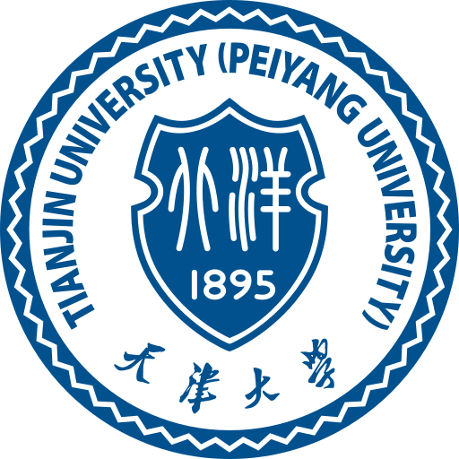
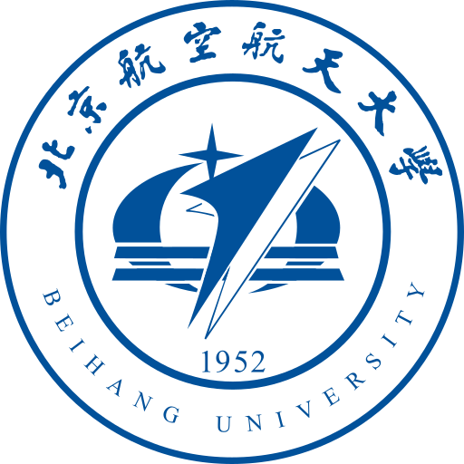

冯灏霆
2020 / 2021 赛季
2023 届

Alumni
2023 赛季及以前参与机械组建设与研发的队员，在千里时期积极支持过战队发展。
2020 / 2021 赛季
2023 届

2021 / 2022 赛季
2024 届
2021 / 2022 / 2023 赛季
2024 届2024 赛季及以后参与千里战队机械组研发与传承的队员。
2021 / 2022 / 2024 / 2025 赛季
2025 届2024 / 2025 赛季
2026 届2024 / 2025 / 2026 赛季
2026 届2024 / 2025 赛季
2026 届
2024 / 2025 赛季
2026 届2024 赛季
2026 届
2024 赛季
2026 届